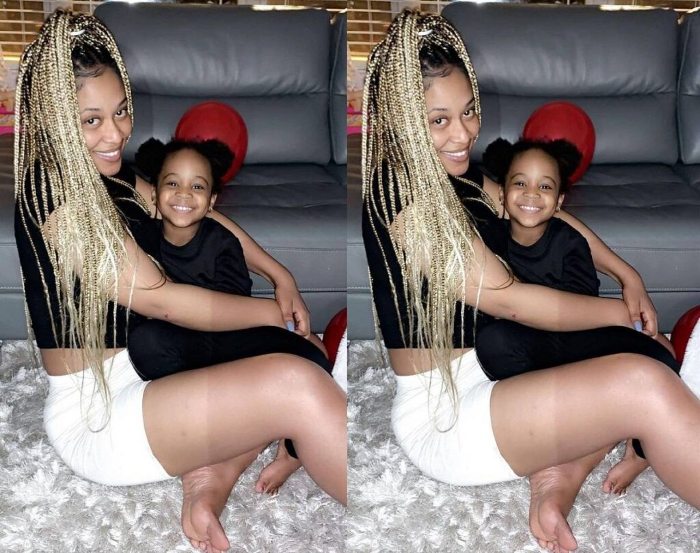
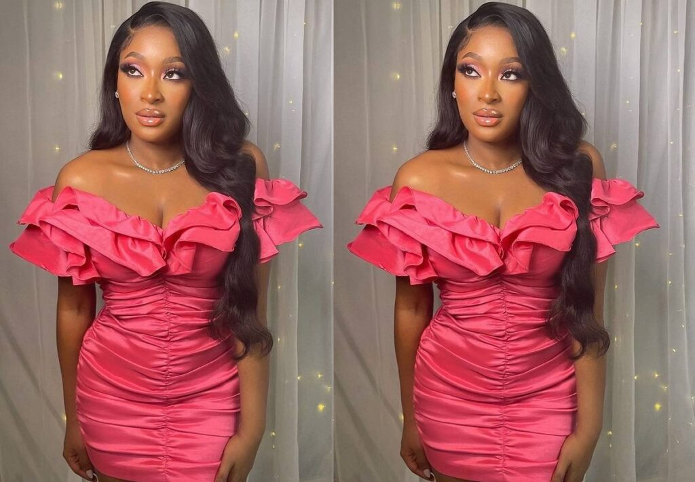
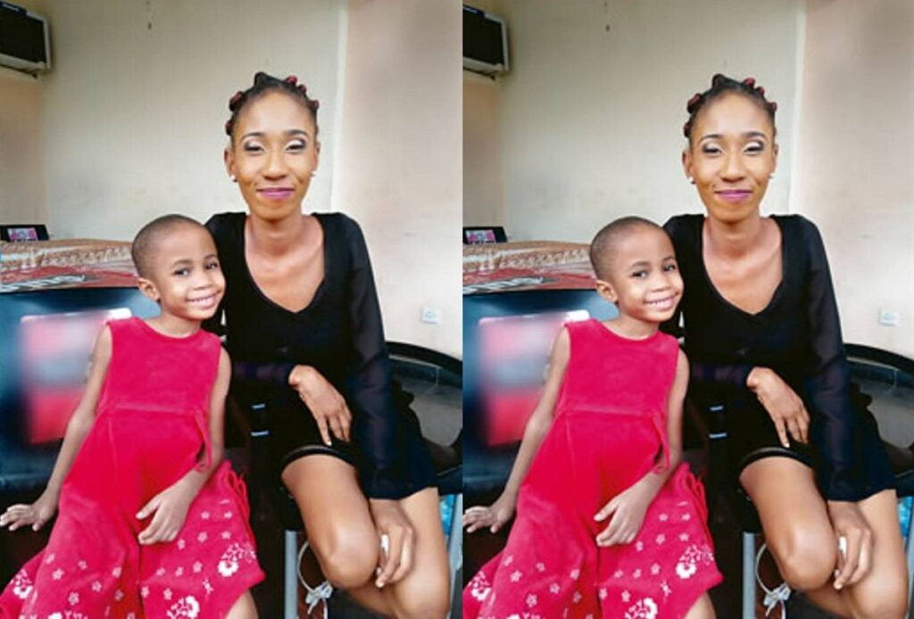

Sophia Momodu
she made the list as she was his first love and popularly known girlfriend from the beginning and there relationship brought about the birth of Aurora Imade Adeleke whom
is davido's first daughter and child
-
Amanda(laplubelle)

she is an Atlanta-based model whom is said to be davido's second daughter mama: Hailey Adeleke
Chioma Avril Rowland
Here we have the baby mama with a glory as she was the one that was openly dated by davido and got the engagement ring and was paraded as wife to be but sadly
things are not the way it usually look like in camera. she's the mother of David Ifeanyi Adeleke
Larissa Loreno

Larissa Yasmin Lorenco is a London-based makeup artist and the mother of davido's fifth child
-
Ayotomide Labinjo

she made her affair with davido know public in 2017 as she revealed she and the artitse has a night club affair which result in mitchell Anu Adeleke